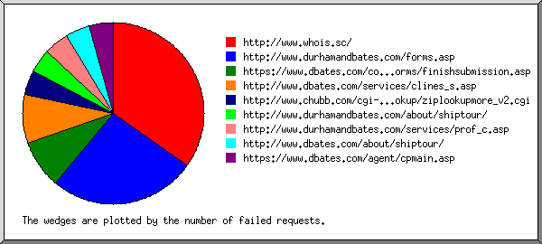
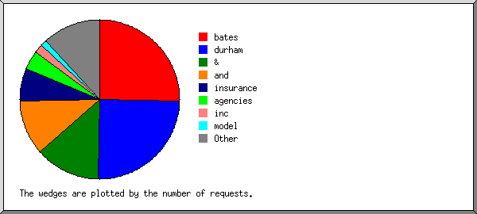
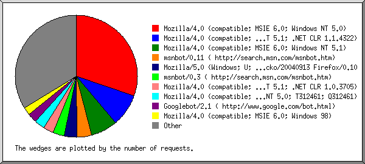
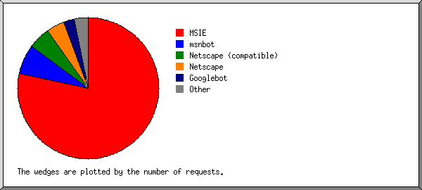
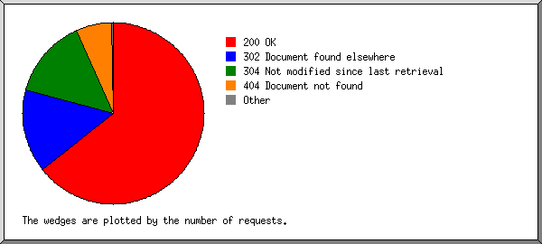
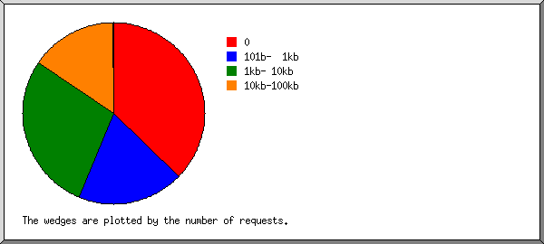
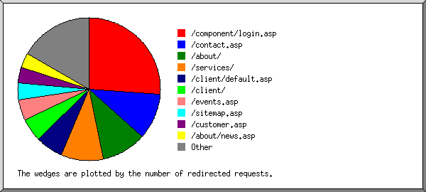
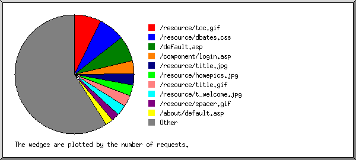

Web Server Statistics for es57045 Web Server Statistics for es57045
Web Server Statistics for es57045 Web Server Statistics for es57045(Go To: Top: General Summary: Monthly Report: Daily Summary: Hourly Summary: Failed Referrer Report: Search Word Report: Browser Report: Browser Summary: Operating System Report: Status Code Report: File Size Report: Redirection Report: Request Report)
This report contains overall statistics.
(Figures in parentheses refer to the 7-day period ending Sep 30
2004 at 11:59 PM).
Successful requests: 6,224 (1,847)
Average successful requests per day: 209 (263)
Logfile lines without status code: 99 (0)
Failed requests: 525 (230)
Redirected requests: 1,182 (310)
Distinct files requested: 178 (158)
Distinct hosts served: 380 (112)
Corrupt logfile lines: 1
Unwanted logfile entries: 30
Data transferred: 35.774 Mbytes (11.124 Mbytes)
Average data transferred per day: 1.205 Mbytes (1.589 Mbytes)
(Go To: Top: General Summary: Monthly Report: Daily Summary: Hourly Summary: Failed Referrer Report: Search Word Report: Browser Report: Browser Summary: Operating System Report: Status Code Report: File Size Report: Redirection Report: Request Report)
This report lists the activity in each month.
Each unit ( ) represents 1 request
for a page.
) represents 1 request
for a page.
month: #reqs: #pages: --------: -----: ------: Sep 2004: 6224: 0:Busiest month: Sep 2004 (0 requests for pages).
(Go To: Top: General Summary: Monthly Report: Daily Summary: Hourly Summary: Failed Referrer Report: Search Word Report: Browser Report: Browser Summary: Operating System Report: Status Code Report: File Size Report: Redirection Report: Request Report)
This report lists the total activity for each day of the week, summed over all the weeks in the report.
Each unit () represents 1 request
for a page.
day: #reqs: #pages: ---: -----: ------: Sun: 133: 0: Mon: 1124: 0: Tue: 1044: 0: Wed: 1489: 0: Thu: 1451: 0: Fri: 719: 0: Sat: 264: 0:
(Go To: Top: General Summary: Monthly Report: Daily Summary: Hourly Summary: Failed Referrer Report: Search Word Report: Browser Report: Browser Summary: Operating System Report: Status Code Report: File Size Report: Redirection Report: Request Report)
This report lists the total activity for each hour of the day, summed over all the days in the report.
Each unit () represents 1 request
for a page.
hour: #reqs: #pages: ----: -----: ------: 0: 256: 0: 1: 142: 0: 2: 215: 0: 3: 82: 0: 4: 112: 0: 5: 256: 0: 6: 82: 0: 7: 70: 0: 8: 30: 0: 9: 85: 0: 10: 72: 0: 11: 44: 0: 12: 58: 0: 13: 110: 0: 14: 342: 0: 15: 681: 0: 16: 483: 0: 17: 352: 0: 18: 389: 0: 19: 649: 0: 20: 198: 0: 21: 355: 0: 22: 621: 0: 23: 540: 0:
(Go To: Top: General Summary: Monthly Report: Daily Summary: Hourly Summary: Failed Referrer Report: Search Word Report: Browser Report: Browser Summary: Operating System Report: Status Code Report: File Size Report: Redirection Report: Request Report)
This report lists the referrers containing broken links to the site.

Listing referring URLs, sorted by the number of failed requests.
#reqs: URL
-----: ---
8: http://www.whois.sc/
6: http://www.durhamandbates.com/forms.asp
2: https://www.dbates.com/component/forms/finishsubmission.asp
2: http://www.dbates.com/services/clines_s.asp
1: http://www.chubb.com/cgi-bin/agentlookup/ziplookupmore_v2.cgi
1: http://www.durhamandbates.com/about/shiptour/
1: http://www.durhamandbates.com/services/prof_c.asp
1: http://www.dbates.com/about/shiptour/
1: https://www.dbates.com/agent/cpmain.asp
(Go To: Top: General Summary: Monthly Report: Daily Summary: Hourly Summary: Failed Referrer Report: Search Word Report: Browser Report: Browser Summary: Operating System Report: Status Code Report: File Size Report: Redirection Report: Request Report)
This report lists which words people used in search engines to find the site.

Listing query words, sorted by the number of requests.
#reqs: search term
-----: -----------
41: bates
40: durham
21: &
18: and
11: insurance
6: agencies
3: inc
2: model
1: auto
1: galleons
1: www.dbates
1: london
1: dbates
1: ships
1: cache:qrctkojr5ogj:www.atlanticmutual.com/agents/agencybycity.cfm?city=portland&state=or
1: value
1: for
1: vehicles
1: related:www.dbates.com/
1: high
1: washington
1: agency
1: brokers
1: worldwide
1: bone
1: napoleonic
1: floating
(Go To: Top: General Summary: Monthly Report: Daily Summary: Hourly Summary: Failed Referrer Report: Search Word Report: Browser Report: Browser Summary: Operating System Report: Status Code Report: File Size Report: Redirection Report: Request Report)
This report lists the browsers used by visitors.

Listing the top 40 browsers by the number of requests, sorted by the number of requests.
#reqs: browser -----: ------- 1874: Mozilla/4.0 (compatible; MSIE 6.0; Windows NT 5.0) 526: Mozilla/4.0 (compatible; MSIE 6.0; Windows NT 5.1; .NET CLR 1.1.4322) 437: Mozilla/4.0 (compatible; MSIE 6.0; Windows NT 5.1) 239: msnbot/0.11 ( http://search.msn.com/msnbot.htm) 207: Mozilla/5.0 (Windows; U; Windows NT 5.0; rv:1.7.3) Gecko/20040913 Firefox/0.10 183: msnbot/0.3 ( http://search.msn.com/msnbot.htm) 172: Mozilla/4.0 (compatible; MSIE 6.0; Windows NT 5.1; .NET CLR 1.0.3705) 170: Mozilla/4.0 (compatible; MSIE 6.0; Windows NT 5.0; T312461; Q312461) 149: Googlebot/2.1 ( http://www.google.com/bot.html) 132: Mozilla/4.0 (compatible; MSIE 6.0; Windows 98) 124: Mozilla/4.0 (compatible; MSIE 5.01; Windows NT 5.0) 112: Mozilla/4.0 (compatible; MSIE 6.0; Windows NT 5.1; SV1) 101: Mozilla/4.0 (compatible; MSIE 6.0; Windows NT 5.1; FunWebProducts; SV1) 72: Mozilla/4.0 (compatible; MSIE 6.0; Windows NT 5.1; SV1; .NET CLR 1.1.4322) 70: Mozilla/4.0 (compatible; MSIE 6.0; Windows NT 5.1; SV1; .NET CLR 1.0.3705) 69: Mozilla/4.0 (compatible; MSIE 5.5; Windows NT 4.0) 67: Mozilla/4.0 (compatible; MSIE 6.0; Windows XP) 65: Mozilla/4.0 compatible ZyBorg/1.0 Dead Link Checker (wn.dlc@looksmart.net; http://www.WISEnutbot.com) 60: Mozilla/4.0 (compatible; grub-client-2.3) 60: Mozilla/4.0 (compatible; MSIE 6.0; Windows 98; Win 9x 4.90) 56: Mozilla/4.0 (compatible; MSIE 6.0; Windows NT 5.1; .NET CLR 1.0.3705; .NET CLR 1.1.4322) 55: Mozilla/5.0 (compatible; Yahoo! Slurp; http://help.yahoo.com/help/us/ysearch/slurp) 53: Mozilla/5.0 (compatible; Googlebot/2.1; http://www.google.com/bot.html) 52: Mozilla/4.0 (compatible; MSIE 5.23; Mac_PowerPC) 52: Mozilla/4.0 (compatible; MSIE 6.0; Windows 98; .NET CLR 1.1.4322) 50: Mozilla/3.01 (compatible;) 50: Missouri College Browse 45: Mozilla/4.0 (compatible; MSIE 6.0; Windows NT 5.1; SV1; .NET CLR 1.0.3705; .NET CLR 1.1.4322) 45: Mozilla/4.0 (compatible; MSIE 6.0; Windows NT 5.1; FunWebProducts; .NET CLR 1.0.3705; .NET CLR 1.1.4322) 43: Mozilla/4.0 (compatible; MSIE 5.5; Windows NT 5.0) 39: NG/2.0 39: Mozilla/4.0 (compatible; MSIE 6.0; Windows 98; Compaq) 38: Mozilla/4.0 (compatible; MSIE 6.0; Windows NT 5.0; .NET CLR 1.1.4322; .NET CLR 1.0.3705) 36: Mozilla/4.0 (compatible; MSIE 6.0; Windows NT 5.1; MSIECrawler) 33: Mozilla/4.0 (compatible; MSIE 6.0; Windows 98; FunWebProducts) 33: Mozilla/4.0 (compatible; MSIE 6.0; Windows NT 5.0; .NET CLR 1.1.4322) 32: Mozilla/4.0 (compatible; MSIE 6.0; Windows NT 5.1; IE 6.0 SP1 (FID r3.0); .NET CLR 1.0.3705; .NET CLR 1.1.4322) 27: Mozilla/4.0 (compatible; MSIE 6.0; Windows NT 4.0; .NET CLR 1.0.3705) 25: Mozilla/4.0 (compatible; MSIE 5.01; Windows 98) 24: Mozilla/4.0 (compatible; MSIE 6.0; Windows NT 5.2; .NET CLR 1.1.4322) 464: [not listed: 57 browsers]
(Go To: Top: General Summary: Monthly Report: Daily Summary: Hourly Summary: Failed Referrer Report: Search Word Report: Browser Report: Browser Summary: Operating System Report: Status Code Report: File Size Report: Redirection Report: Request Report)
This report lists the vendors of visitors' browsers.

Listing the top 20 browsers by the number of requests, sorted by the number of requests.
#reqs: browser
-----: -------
4842: MSIE
4437: MSIE/6
402: MSIE/5
3: MSIE/4
422: msnbot
422: msnbot/0
311: Netscape (compatible)
258: Netscape
229: Mozilla/1
149: Googlebot
149: Googlebot/2
50: Missouri College Browse
39: NG
39: NG/2
14: Gaisbot
14: Gaisbot/3
14: ia_archiver
13: Yahoo-MMCrawler
13: Yahoo-MMCrawler/3
12: Webster Pro V3.0 Webster Pro V3.3
12: Opera
12: Opera/7
8: SurveyBot
8: SurveyBot/2
6: TurnitinBot
6: TurnitinBot/2
5: Java
5: Java/1
4: Faxobot
4: Faxobot/1
3: psbot
3: psbot/0
3: NaverBot-1.0 (NHN Corp.
3: NaverBot-1.0 (NHN Corp. /
3: http:
2: http://www
1: http://crawler
2: larbin_2.6.3 larbin2.6.3@unspecified.mail
10: [not listed: 9 browsers]
(Go To: Top: General Summary: Monthly Report: Daily Summary: Hourly Summary: Failed Referrer Report: Search Word Report: Browser Report: Browser Summary: Operating System Report: Status Code Report: File Size Report: Redirection Report: Request Report)
This report lists the operating systems used by visitors.
Listing operating systems, sorted by the number of requests for pages.
#: #reqs: #pages: OS --: -----: ------: -- 1: 14: 0: Unix : 14: 0: Linux 2: 225: 0: Robots 3: 80: 0: Macintosh : 80: 0: Macintosh PowerPC 4: 878: 0: OS unknown 5: 4983: 0: Windows : 14: 0: Windows 95 : 240: 0: Unknown Windows : 1818: 0: Windows XP : 357: 0: Windows 98 : 2369: 0: Windows 2000 : 60: 0: Windows ME : 125: 0: Windows NT
(Go To: Top: General Summary: Monthly Report: Daily Summary: Hourly Summary: Failed Referrer Report: Search Word Report: Browser Report: Browser Summary: Operating System Report: Status Code Report: File Size Report: Redirection Report: Request Report)
This report lists the HTTP status codes of all requests.

Listing status codes, sorted numerically.
#reqs: status code
-----: -----------
5092: 200 OK
6: 206 Partial content
1182: 302 Document found elsewhere
1126: 304 Not modified since last retrieval
2: 401 Authentication required
518: 404 Document not found
5: 500 Internal server error
(Go To: Top: General Summary: Monthly Report: Daily Summary: Hourly Summary: Failed Referrer Report: Search Word Report: Browser Report: Browser Summary: Operating System Report: Status Code Report: File Size Report: Redirection Report: Request Report)
This report lists the sizes of files.

size: #reqs: %bytes:
-----------: -----: ------:
0: 2318: :
1b- 10b: 0: :
11b- 100b: 0: :
101b- 1kb: 1180: 0.88%:
1kb- 10kb: 1757: 11.39%:
10kb-100kb: 968: 87.09%:
100kb- 1Mb: 1: 0.64%:
(Go To: Top: General Summary: Monthly Report: Daily Summary: Hourly Summary: Failed Referrer Report: Search Word Report: Browser Report: Browser Summary: Operating System Report: Status Code Report: File Size Report: Redirection Report: Request Report)
This report lists the files that caused requests to be redirected to another file. (Usually directories with the final slash missing, or CGI scripts that forced redirections.)

Listing the top 30 files by the number of redirected requests, sorted by the number of redirected requests.
#reqs: file
-----: ----
309: /component/login.asp
124: /contact.asp
119: /about/
113: /services/
73: /client/default.asp
63: /client/
56: /events.asp
45: /sitemap.asp
42: /customer.asp
40: /about/news.asp
38: /risk101.asp
32: /links.asp
24: /agent/default.asp
17: /viewdocument.asp
12: /viewdocument.asp?ID=QEBPEDBU
13: /focus/mvrreg/default.asp
12: /focus/mvrreg/mvrreg0.asp
7: /signin.asp
7: /forms.asp
6: /directry.asp
4: /focus/euse/
4: /focus/euse/euse1.asp
4: /focus/euse/default.asp
3: /about/shiptour/
2: /services/tech/default.asp
2: /focus/mvrreg/mvrreg2.asp
2: /focus/mvrreg/
2: /focus/mvrreg/mvrreg1.asp
2: /editform.asp
2: /privacy.asp
2: /loadform.asp
13: [not listed: 11 files]
(Go To: Top: General Summary: Monthly Report: Daily Summary: Hourly Summary: Failed Referrer Report: Search Word Report: Browser Report: Browser Summary: Operating System Report: Status Code Report: File Size Report: Redirection Report: Request Report)
This report lists the files on the site.

Listing files with at least 20 requests, sorted by the number of requests.
#reqs: %bytes: last time: file -----: ------: ------------------: ---- 455: 8.79%: Sep/30/04 9:24 PM: /resource/toc.gif 449: 1.14%: Sep/30/04 9:24 PM: /resource/dbates.css 425: 0.07%: Sep/30/04 7:08 PM: /default.asp 221: : Sep/30/04 7:58 AM: /component/login.asp 189: 6.41%: Sep/30/04 6:17 PM: /resource/title.jpg 186: 11.92%: Sep/30/04 6:16 PM: /resource/homepics.jpg 185: 1.54%: Sep/30/04 6:16 PM: /resource/title.gif 183: 0.71%: Sep/30/04 6:16 PM: /resource/t_welcome.jpg 133: 0.28%: Sep/30/04 9:24 PM: /resource/spacer.gif 124: 0.01%: Sep/30/04 6:17 PM: /about/default.asp 119: 15.33%: Sep/30/04 6:17 PM: /resource/about.jpg 116: 0.03%: Sep/30/04 4:03 PM: /services/default.asp 115: : Sep/30/04 7:08 PM: /contact.asp 113: 0.43%: Sep/30/04 6:17 PM: /resource/t_about.jpg 113: 0.27%: Sep/30/04 6:17 PM: /resource/x_master.jpg 84: 14.00%: Sep/30/04 6:16 PM: /resource/contacttx.jpg 80: 0.32%: Sep/30/04 9:24 PM: /resource/dialc.jpg 71: 0.22%: Sep/30/04 9:24 PM: /resource/dialp.jpg 69: 2.09%: Sep/30/04 6:17 PM: /resource/abouttx.jpg 69: 6.02%: Sep/30/04 7:08 PM: /directry.asp 68: 0.23%: Sep/30/04 9:24 PM: /resource/dialn.jpg 62: 8.78%: Sep/30/04 4:03 PM: /resource/services.gif 59: 0.30%: Sep/30/04 6:15 PM: /resource/t_contact.jpg 58: : Sep/30/04 10:05 PM: /services/clines0.asp 54: : Sep/30/04 10:05 PM: /about/history.asp 51: : Sep/30/04 4:03 PM: /customer.asp 51: : Sep/30/04 6:17 PM: /sitemap.asp 51: : Sep/30/04 10:04 PM: /services/prof0.asp 50: 0.15%: Sep/30/04 4:03 PM: /signin.asp 46: 0.13%: Sep/30/04 2:27 AM: /agent/document/resource/agent.css 43: : Sep/30/04 2:44 PM: /about/begin.asp 42: : Sep/30/04 10:04 PM: /about/commune.asp 42: : Sep/30/04 2:44 PM: /about/esop.asp 41: : Sep/30/04 10:05 PM: /about/ships.asp 41: : Sep/30/04 10:04 PM: /about/industry.asp 41: : Sep/30/04 10:02 AM: /services/clines_s.asp 40: 2.71%: Sep/30/04 6:17 PM: /resource/prof.jpg 40: : Sep/30/04 9:41 AM: /services/clines_r.asp 40: : Sep/30/04 3:18 PM: /about/partner.asp 39: 0.02%: Sep/30/04 4:03 PM: /privacy.asp 39: 0.13%: Sep/30/04 6:17 PM: /resource/t_prof.jpg 38: : Sep/30/04 10:05 PM: /about/sponsor.asp 37: 3.65%: Sep/29/04 7:15 PM: /resource/clines.jpg 37: : Sep/30/04 9:56 AM: /services/clines_i.asp 36: : Sep/30/04 6:16 PM: /events.asp 35: : Sep/30/04 10:04 PM: /services/marine0.asp 35: 0.24%: Sep/29/04 7:15 PM: /resource/t_clines.jpg 34: 0.14%: Sep/30/04 6:17 PM: /resource/t_sitemap.jpg 34: 0.10%: Sep/30/04 2:27 PM: /resource/dotdoc.jpg 34: : Sep/30/04 10:05 PM: /services/consult0.asp 34: : Sep/30/04 1:05 PM: /about/expand.asp 34: : Sep/30/04 6:17 PM: /risk101.asp 33: 0.15%: Sep/30/04 4:03 PM: /resource/linetab.gif 32: : Sep/30/04 2:26 PM: /services/prof_c.asp 32: 0.16%: Sep/30/04 4:03 PM: /resource/logon.gif 32: : Sep/30/04 10:04 PM: /services/plines0.asp 32: 0.25%: Sep/30/04 4:03 PM: /resource/t_resource.jpg 32: 1.04%: Sep/30/04 2:35 AM: /agent/cpmain.asp 32: : Sep/30/04 6:17 PM: /services/prof_r.asp 31: : Sep/30/04 2:26 PM: /services/prof_s.asp 30: : Sep/30/04 4:03 PM: /links.asp 29: 0.18%: Sep/30/04 2:27 AM: /agent/signin.asp 29: : Sep/30/04 9:25 PM: /services/marine_x.asp 28: : Sep/30/04 6:17 PM: /services/prof_i.asp 28: 0.21%: Sep/30/04 6:16 PM: /resource/t_events.jpg 28: : Sep/30/04 9:47 AM: /services/plines_c.asp 27: : Sep/30/04 9:24 PM: /services/marine_c.asp 26: 0.12%: Sep/30/04 6:17 PM: /resource/t_risk101.gif 25: 0.16%: Sep/30/04 6:17 PM: /resource/reprsent.jpg 25: : Sep/30/04 10:11 AM: /services/plines_r.asp 25: : Sep/30/04 9:25 PM: /services/marine_i.asp 23: 0.15%: Sep/30/04 9:24 PM: /resource/special.jpg 23: : Sep/30/04 9:24 PM: /services/marine_s.asp 22: 0.07%: Sep/29/04 7:15 PM: /resource/b_clines.jpg 22: 0.64%: Sep/30/04 2:32 AM: /agent/viewassociate.asp 21: 0.27%: Sep/30/04 2:27 AM: /agent/document/resource/tabpublic.jpg 21: 0.09%: Sep/30/04 4:03 PM: /resource/t_links.jpg 21: 0.21%: Sep/30/04 2:27 AM: /agent/document/resource/tabhelp.jpg 21: 0.03%: Sep/30/04 2:27 AM: /agent/default.asp 21: 0.07%: Sep/30/04 6:17 PM: /resource/b_prof.jpg 21: 0.07%: Sep/30/04 2:27 AM: /agent/cptoc.asp 21: 0.24%: Sep/30/04 2:27 AM: /agent/document/resource/tabidea.jpg 21: 0.27%: Sep/30/04 2:27 AM: /agent/document/resource/tabcontrol.jpg 20: 0.12%: Sep/30/04 9:25 PM: /resource/involved.jpg 20: 0.12%: Sep/30/04 9:24 PM: /resource/coverage.jpg 485: 9.23%: Sep/30/04 9:25 PM: [not listed: 82 files]
(Go To: Top: General Summary: Monthly Report: Daily Summary: Hourly Summary: Failed Referrer Report: Search Word Report: Browser Report: Browser Summary: Operating System Report: Status Code Report: File Size Report: Redirection Report: Request Report)